Open source · self-hosted · Android and iOS
Run more agents than you can watch.
Zen puts a Brain on your own computer. Give it a goal from your phone. It splits the work, picks an agent and model for each part, reviews what comes back and tells you when it is done.

Brain
Say the goal once.
Brain holds the plan. It records each part as Work, hands it to a Worker and reads the result before closing it. Workers are ordinary tmux Sessions, so you can open any of them and take over.

Routing
Brain picks the agent for each task.
The routing guide is routing.md, a few lines of Markdown in Brain's workspace. Before every spawn Brain reads it and makes the call: which client, which model, how much reasoning. Tell Brain a preference and it rewrites the line.

Models
Change the agent behind anything.
One command moves Brain to another client, and the conversation carries over. Every Worker gets its own executor, model and reasoning level, using each client's own scale. Pick one in the drawing.

codex claude pi grok agent (Cursor) opencode. One authenticated CLI is enough.
Durable Work
Work outlives the process.
Every Work, Attempt and Event is stored by the daemon in one transactional store. A laptop can sleep, a provider can drop, the daemon can update. Timers rebuild from that record, and a Worker that goes quiet becomes a decision for Brain.
w_32Android crash on resume
- createdobjective and finish line recorded
- attemptWorker on
claude· fence 1 - progresscrash reproduced, fixing
- daemon restarted · timers rebuilt from stored state
- resultfixed, 2 tests flaky
- attemptBrain sends a follow-up · fence 2
- result44 of 44 green
- acceptedBrain read the evidence and closed it
Phone
Your computer, in your pocket.
The Android and iOS app talks to your daemon. Read a Worker as Chat, drop into its live Terminal, check the machine, review a diff.
Structured messages, tool calls and plans for any of the six clients.
The same tmux Session, rendered natively with libghostty. Type, scroll, take over.
Scheduled actions run as visible Work and post the result back to the Brain thread they came from.
CPU, memory, pressure and disk, with processes attributed to Workers, Brain or Docker. Brain hears about pressure too.
All, working and staged changes of a Session's repository. Read-only.
ios-crash claude
ready() and added a test.Plan
ReproduceFix hydration orderRun device checkios-crash terminal
❯ bun test session ✓ resume waits for hydration ✓ token read after ready() ✓ 10 more 12 pass · 0 fail · 1.84s ❯ git diff --stat app/services/session.ts | 9 ++++-- app/services/session.test.ts | 31 +++++ ❯
Calendar today
Resources elevated
Processes
CPU · last 30 min
Changes working
app/services/session.ts +6 −3
@@ -41,9 +41,12 @@ export async function resume() { - const token = readToken(); - await store.hydrate(); + await store.hydrate(); + await ready(); + const token = readToken(); if (!token) return signIn();
Read-only. Nothing is staged or discarded from the phone.
Yours
One owner, one machine.
Zen is built for a single person. Your repositories, credentials and agent state stay on your host; the phone sees what you open, and model providers see what agents send them.
Signed devices
The daemon has an Ed25519 identity. A phone pairs once with a short-lived code, then signs every request. Revoke with
zen devices revoke.Your network
Trusted LAN, Tailscale, a Cloudflare Tunnel or your own reverse proxy. No hosted relay sits in between.
One server at a time
Every screen follows the current server. Switching servers never mixes their data.
Quiet by default
Push notifications fire when a Worker is blocked, fails or finishes, and never for the Session on your screen.
Install
Set up in a few minutes.
Linux (amd64, arm64), WSL2 or an Apple Silicon Mac, with tmux and one authenticated agent CLI.
-
Install the daemon
curl -fsSL https://raw.githubusercontent.com/daoleno/zen/main/install.sh | shChecks the release checksum. No sudo, no telemetry, no agent CLIs installed for you.
-
Check the host and start
zen doctor && zen --lanThen run the
zen paircommand it prints. Away from home, use Tailscale orzen pair https://your-origin. -
Pair your phone
Android: the arm64 APK on GitHub Releases. iOS: build from source; a TestFlight preview awaits Apple review. Scan the code and open Brain.
Beta. Calendar and the Telegram channel are beta; Connections to Linear, Notion, GitHub, Slack and Google are a preview, and not every service can connect for the first time yet. Known issues.